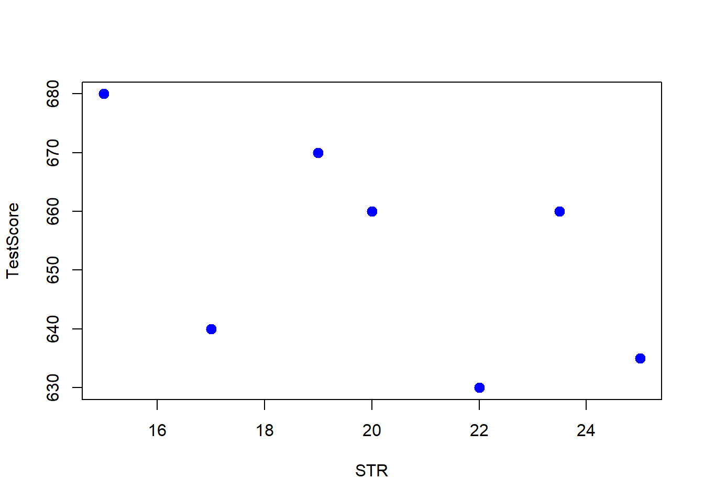
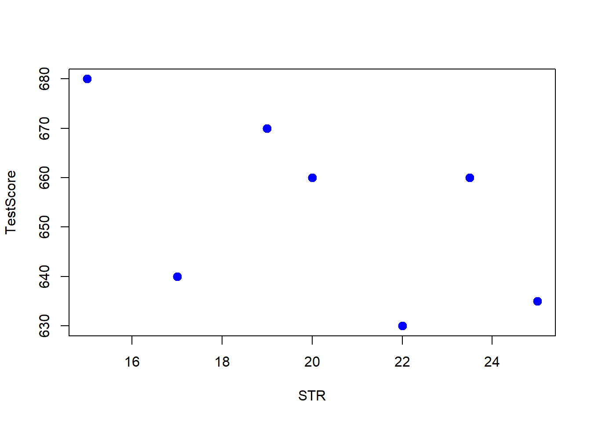
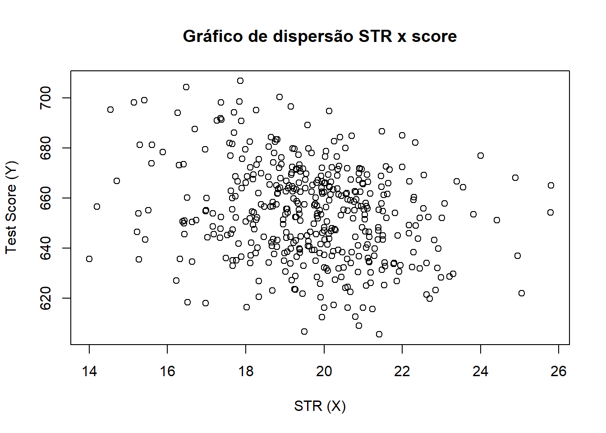

1STR <- c(15, 17, 19, 20, 22, 23.5, 25)
TestScore <- c(680, 640, 670, 660, 630, 660, 635)
plot(x=STR, y=TestScore, pch=20, col='blue', cex=2)- 1
- Alguns dados inventados.

Turmas menores levam a melhor aprendizado dos alunos? Se sim, quanto? [Discussão]
1STR <- c(15, 17, 19, 20, 22, 23.5, 25)
TestScore <- c(680, 640, 670, 660, 630, 660, 635)
plot(x=STR, y=TestScore, pch=20, col='blue', cex=2)
Nosso modelo de regressão é \[\begin{align*} Y_i &= \beta_0 + \beta_1X_i + u_i, \quad u_i\sim \IID(0,\sigma^2_u)\\ TestScore &= \beta_0 + \beta_1\times STR + u, \quad u\sim IID(0,\sigma_u) \end{align*}\]
1fmla = TestScore ~ 1 + STR
class(fmla)formula. O 1 representa que incluimos uma constante.1
[1] "formula"1out = lm(fmla)
out$coefficients
summary(out)lm(), “linear model”, sobre a formula da regressão.
(Intercept) STR
713.567733 -2.968015
Call:
lm(formula = fmla)
Residuals:
1 2 3 4 5 6 7
10.952 -23.111 12.825 5.793 -18.271 16.181 -4.367
Coefficients:
Estimate Std. Error t value Pr(>|t|)
(Intercept) 713.568 40.258 17.73 1.05e-05 ***
STR -2.968 1.966 -1.51 0.191
---
Signif. codes: 0 '***' 0.001 '**' 0.01 '*' 0.05 '.' 0.1 ' ' 1
Residual standard error: 17.13 on 5 degrees of freedom
Multiple R-squared: 0.3132, Adjusted R-squared: 0.1758
F-statistic: 2.28 on 1 and 5 DF, p-value: 0.1914data.frame.
[1] "data.frame"1CASchools$STR = CASchools$students/CASchools$teachers
CASchools$score = (CASchools$read + CASchools$math)/2
fmla = score ~ 1 + STR
out = lm(score ~ 1 + STR, data = CASchools)
out = lm(CASchools$score ~ 1 + CASchools$STR)
summary(out)
Call:
lm(formula = CASchools$score ~ 1 + CASchools$STR)
Residuals:
Min 1Q Median 3Q Max
-47.727 -14.251 0.483 12.822 48.540
Coefficients:
Estimate Std. Error t value Pr(>|t|)
(Intercept) 698.9329 9.4675 73.825 < 2e-16 ***
CASchools$STR -2.2798 0.4798 -4.751 2.78e-06 ***
---
Signif. codes: 0 '***' 0.001 '**' 0.01 '*' 0.05 '.' 0.1 ' ' 1
Residual standard error: 18.58 on 418 degrees of freedom
Multiple R-squared: 0.05124, Adjusted R-squared: 0.04897
F-statistic: 22.58 on 1 and 418 DF, p-value: 2.783e-06O modelo de regressão linear simples é
\[ Y_j = \beta_0 + \beta_1X_j + u_j,\quad u_j\sim iid(0,\sigma^2_u), \] onde
O modelo de regressão linear é uma idealização para o processo que gera as realizações \(Y_j\).
TODO: Gráfico dos resíduos com relação à reta de regressão.
Sejam \(b_0\) e \(b_1\) possíveis valores para o parâmetro \(\beta\). \[\begin{align*} Y_j = b_0 + b_1 X_j + u_j \end{align*}\] \[\begin{align*} u_j &= Y_i - b_0 - b_1 X_i \\ u_j^2 &= (Y_i - b_0 - b_1 X_i)^2 \end{align*}\] A soma do quadrado dos resíduos é \[\begin{align*} SSR(b_0,b_1) = \sum^n_{i=1}(Y_i - b_0 - b_1 X_i)^2 \end{align*}\] O problema de mínimos quadrados (dos resíduos) é \[\begin{align*} \min_{(b_0,b_1)\in\mathbb{R}^2} \sum^n_{i=1}(Y_i - b_0 - b_1 X_i)^2 \end{align*}\] Nós dizemos que os estimadores de MQO, \(\hat\beta_0\) e \(\hat\beta_1\), são os valores para \(b_0\) e \(b_1\) que minimizam os quadrados dos resíduos de regressão. Podemos escrever \[\begin{align*} (\hat\beta_0,\hat\beta_1) = \argmin_{(b_0,b_1)\in\mathbb{R}^2}SSR(b_0,b_1) \end{align*}\] Queremos escolher \((b_0,b_1)\) que minimizam \[\begin{align*} SSR(b_0,b_1) = \sum^n_{i=1}(Y_i - b_0 - b_1 X_i)^2 \end{align*}\] As condições de primeira ordem são \[\begin{align*} \frac{\partial SSR}{\partial b_0} = 0 \qquad \frac{\partial SSR}{\partial b_1} = 0 \end{align*}\] Então \[\begin{align*} \frac{\partial SSR}{\partial b_0} = -2\sum^n_{i=1}(Y_i-\hat\beta_0-\hat\beta_1X_i) = 0 \tag{CPO 1}\\ \frac{\partial SSR}{\partial b_1} = -2\sum^n_{i=1}X_i(Y_i-\hat\beta_0-\hat\beta_1) = 0 \tag{CPO 2} \end{align*}\]
Sempre inclua a constante.↩︎